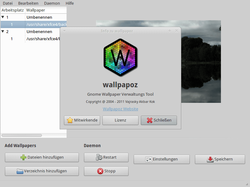
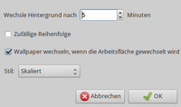

Wallpapoz
Dieser Artikel wurde für die folgenden Ubuntu-Versionen getestet:
Ubuntu 14.04 Trusty Tahr
Zum Verständnis dieses Artikels sind folgende Seiten hilfreich:
Wallpapoz  sorgt dafür, dass man jeder virtuellen Arbeitsfläche bzw. jedem virtuellem Desktop ein eigenes Hintergrundbild zuordnen kann. Zudem bietet das Programm die Möglichkeit, die Hintergrundbilder automatisch in Intervallen auszutauschen.
sorgt dafür, dass man jeder virtuellen Arbeitsfläche bzw. jedem virtuellem Desktop ein eigenes Hintergrundbild zuordnen kann. Zudem bietet das Programm die Möglichkeit, die Hintergrundbilder automatisch in Intervallen auszutauschen.
Wallpapoz wurde ursprünglich für die Desktop-Umgebung GNOME 2 entwickelt und besteht aus zwei Komponenten: einem Hintergrundprogramm (Dienst oder "Daemon"), das den Bildwechsel überwacht und einem Konfigurationsprogramm. Der Programmautor Vajrasky Akbar Kok hatte die Weiterentwicklung mit der Version 0.5 eingestellt, inzwischen aber wieder aufgenommen und die Version 0.6.x herausgebracht, welche nun GNOME 3 und Xfce unterstützt.
Die Hintergrundbilder werden beim Wechsel des virtuellen Desktops zwar nur ausgetauscht, aber optisch erhält jede Arbeitsfläche einen eigenen Hintergrund. Allerdings entsteht dadurch eine kurze Verzögerung beim Wechsel. Unter Compiz und damit auch unter Unity funktioniert das Programm nicht – hier gibt es immer nur einen Hintergrund. Erstellt wurde Wallpapoz mit Python.
Voraussetzungen¶
Das Programm benötigt zwingend ein abhängiges Paket, das aber nicht automatisch installiert wird. Man muss es also vor der eigentlichen Installation von Wallpapoz installieren [1]:
python-imaging
 mit apturl
mit apturl
Paketliste zum Kopieren:
sudo apt-get install python-imaging
sudo aptitude install python-imaging
Optional ist das folgende Paket, das aber nur benötigt wird, wenn man die englischsprachige Hilfe ( F1 ) lesen möchte:
python-gnome2
mit apturl
Paketliste zum Kopieren:
sudo apt-get install python-gnome2
sudo aptitude install python-gnome2
Installation¶
 Wallpapoz ist nicht in den offiziellen Paketquellen vorhanden (514519).
Wallpapoz ist nicht in den offiziellen Paketquellen vorhanden (514519).
Manuell¶
Die Archivdatei wallpapoz-0.6.2.tar.bz2  muss heruntergeladen und entpackt [2] werden. Danach öffnet man ein Terminal [3], wechselt in das entpackte Verzeichnis und startet das Installationsskript mit dem Befehl [3][4]:
muss heruntergeladen und entpackt [2] werden. Danach öffnet man ein Terminal [3], wechselt in das entpackte Verzeichnis und startet das Installationsskript mit dem Befehl [3][4]:
sudo ./setup.py install
Installiert wird dann in den Ordner /usr/local/. Möchte man einen anderen Ordner benutzen (z.B. /usr/), übergibt man diesen Ordner als Option --installdir /usr. Obwohl man das entpackte Verzeichnis anschließend löschen könnte, sollte man es zur Deinstallation aufheben (oder zumindest die heruntergeladene Archivdatei).
Bedienung¶
 Wallpapoz ist bei Ubuntu-Varianten mit einem Anwendungs-Menü unter "Zubehör -> Wallpapoz" zu finden [5].
Hintergrundbilder für jeden virtuellen Desktop¶
Nach dem Start von Wallpapoz sieht man links alle virtuellen Desktops aufgelistet. Noch tragen alle den Namen "Umbenennen", aber mit Rechtsklick ( ) und "Arbeitsfläche umbennen" kann man diese konkret umbenennen. Wenn man einen Desktop anklickt, kann man links einen kleinen Pfeil anklicken. Dadurch öffnet sich ein Aufklappmenü mit dem Pfad des aktuellen Hintergrundbildes. Dies kann man mit einem Rechtsklick und "Wechsle Wallpaper" ändern. Damit die Änderungen wirksam werden, muss man zuerst auf "Speichern" und dann auf "Restart" klicken, um den Dienst von Wallpapoz neu zu starten.
) und "Arbeitsfläche umbennen" kann man diese konkret umbenennen. Wenn man einen Desktop anklickt, kann man links einen kleinen Pfeil anklicken. Dadurch öffnet sich ein Aufklappmenü mit dem Pfad des aktuellen Hintergrundbildes. Dies kann man mit einem Rechtsklick und "Wechsle Wallpaper" ändern. Damit die Änderungen wirksam werden, muss man zuerst auf "Speichern" und dann auf "Restart" klicken, um den Dienst von Wallpapoz neu zu starten.
Mehrere Hintergrundbilder für einen virtuellen Desktop¶
Wallpapoz bietet auch die Möglichkeit, auf jedem virtuellen Desktop mehrere Hintergrundbilder einzurichten, die abwechselnd angezeigt werden. Man kann einen neuen Hintergrund zu einem virtuellen Desktop hinzufügen, indem man die Schaltflächen "Dateien hinzufügen" bzw. "Verzeichnis hinzufügen" auswählt. Damit die Änderungen wirksam werden, muss man nun wieder auf "Speichern" und dann auf "Restart" klicken. Unter "Einstellungen" kann man die Zeit zwischen dem Wechsel von mehreren Hintergründen festlegen.
Einstellungen¶
 Die Programmeinstellungen sind übersichtlich gehalten. Während die anderen Einstellungen bereits erwähnt wurden, kann man hier die Zeitspanne (in Minuten), nach der das Hintergrundbild gewechselt werden soll, festlegen. Bei Bildern mit einer Auflösung, die größer als die des eigenen Desktops ist, ist auch noch der "Stil" interessant. "Skaliert" ist in der Regel ein guter Vorschlag.
Gespeichert werden die Einstellungen in der Datei ~/.wallpapoz/wallpapoz.xml im Homeverzeichnis.
Deinstallation¶
In dem Ordner, der zur Installation verwendet wurde, verwendet man folgenden Befehl:
sudo ./setup.py install
Wurde ein von /usr/local/ abweichender Ordner verwendet, ist dieser – wie bei der Installation – als Option an den Befehl anzuhängen.
Problembehebung¶
Sollten Darstellungsfehler auftreten, kontrolliert man in den Einstellungen, ob der Stil "Bildschirmfüllend" ausgewählt ist.
 Programmübersicht
Programmübersicht- Erstellt mit Inyoka
-
 2004 – 2017 ubuntuusers.de • Einige Rechte vorbehalten
2004 – 2017 ubuntuusers.de • Einige Rechte vorbehalten
Lizenz • Kontakt • Datenschutz • Impressum • Serverstatus -
Serverhousing gespendet von